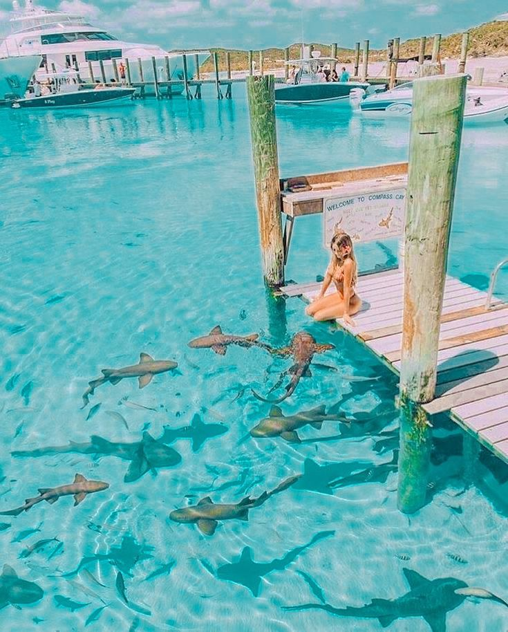
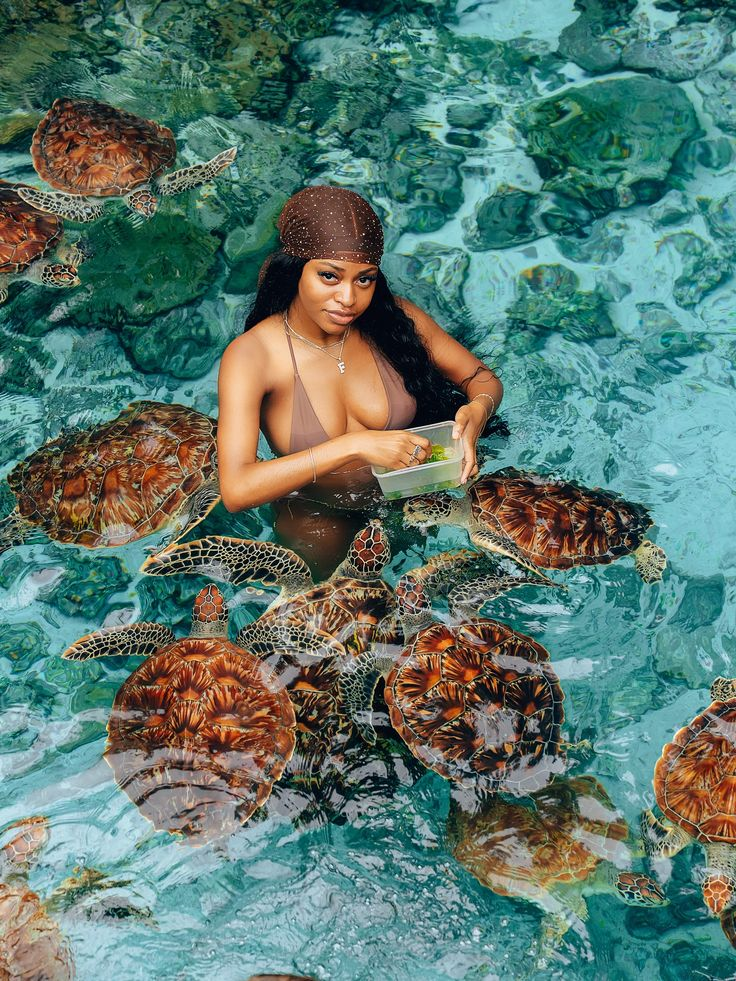
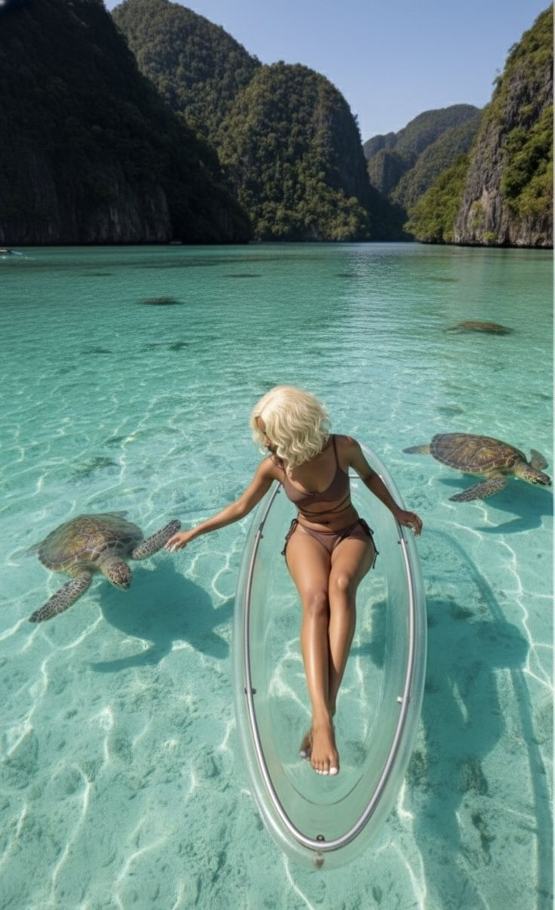
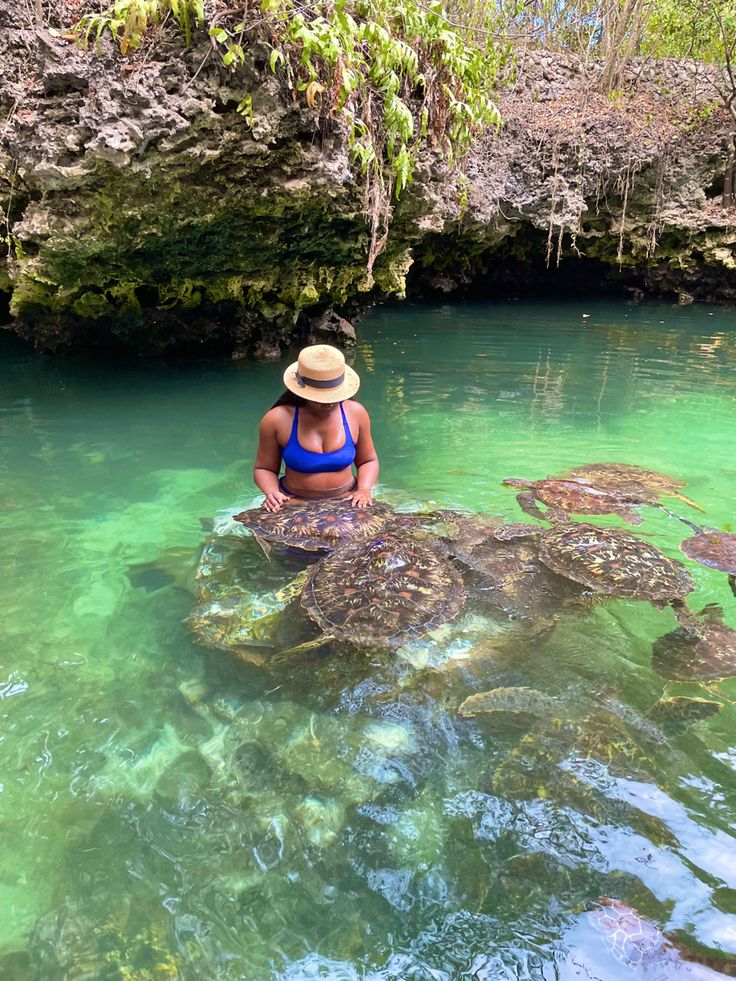
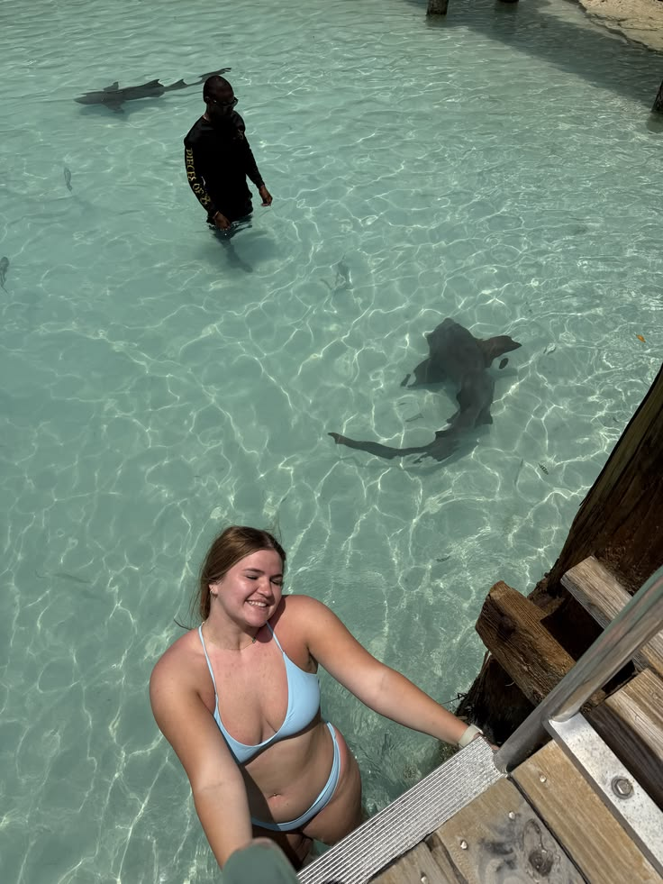

Compass Cay
Explore the beautiful island surroundings and enjoy the peaceful atmosphere of one of the Exuma Cays.
Exuma Sport Coast Service is the accommodation service featured on this platform, helping visitors discover comfortable places to stay while exploring the beautiful islands and communities of Exuma, Bahamas. Our accommodation selection covers areas including George Town, Moss Town, Staniel Cay, Michelson/Roker's Point and other destinations throughout Exuma.
Whether you are visiting for a relaxing beach holiday, an island adventure, water activities or a longer stay, Exuma Sport Coast Service provides accommodation options designed to make your Exuma experience convenient and enjoyable. Browse available properties, view their living rooms, bedrooms and bathrooms, and choose the accommodation that best suits your trip.
Swim with docile Nurse Sharks in shallow waters
Compass Cay is one of the memorable stops in the Exuma Cays, known for its beautiful turquoise waters, natural surroundings, marina and famous nurse sharks. Visitors can explore the island, enjoy the peaceful scenery and experience the clear shallow waters around the cay.
The area is especially popular with visitors arriving by boat. Compass Cay can also be combined with other nearby Exuma attractions during an island-hopping adventure.

Explore the beautiful island surroundings and enjoy the peaceful atmosphere of one of the Exuma Cays.

The marina provides a convenient stopping point for visitors exploring the surrounding cays by boat.

Compass Cay is famous for its resident nurse sharks, which are commonly seen around the marina and shallow waters.

Enjoy the exceptionally clear blue and turquoise water surrounding Compass Cay and the nearby islands.

Compass Cay makes an excellent stop for visitors exploring the Exuma Cays by boat and discovering multiple islands in one trip.
A boat trip is one of the best ways to experience Compass Cay and the surrounding Exuma Cays. Visitors can combine their stop with nearby beaches, sandbars and other island attractions.
Exuma Sport Coast Service · Exuma, Bahamas, opposite the airport · exumaaccomodations@gmail.com
© 2026 Exuma Sport Coast Service · All rights reserved.